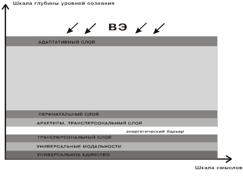

Уильям Джеймс был первым психологом, который использовал термин transрersonal (трансперсональное) в своем курсе в Гарвардском университете в 1905 году, и он по праву считается первым трансперсональным психологом за свою пионерскую работу «Многообразие религиозного опыта». В ходе многочисленных дискуссий о том, как назвать новое психологическое направление, в 1968 году кругом его основателей — Э. Сутичем, А. Маслоу, С. Грофом и другими — по предложению С. Грофа было принято название трансперсональная психология. Существует немало интерпретаций самого слова «трансперсональное». Видный трансперсональный психолог Кен Уилбер слово «трансперсональное» поясняет как «личное +...» и считает, что трансперсональная ориентация явным образом включает все остальные области личностной психологии, и добавляет к ним более глубокие и высокие аспекты человеческого опыта, которые трансцендируют обычные и повседневные переживания. Он считает, что трансперсональное — или «более чем персональное, надличностное» — это попытка более глубоко, аккуратно и научно представлять весь спектр возможного человеческого переживания. Оно включает в себя полный спектр сознания.
Трансперсональная психология — это учение о трансперсональных переживаниях, их природе, разнообразных формах, причинах и следствиях, а также о тех проявлениях в областях психологии, философии, практической жизни, искусства, культуры, жизненного стиля, религии и т.д., которые вдохновляются ими или которые стремятся их вызвать, выразить, применить или понять.
Холономный подход — это более широкий, целостный и многогранный взгляд на понимание сущности человеческой природы и всей Вселенной, в основе которой лежит голографическая модель Вселенной и человеческого сознания. На базе этого подхода работают многие исследователи, психологи, психиатры и психотерапевты западной психологии. Среди них Станислав и Кристина Гроф, Леонард Орр, Сондра Рэй, Боб Мандел, Джим Леонард. Фил Лаут, Кен Уилбер и др.
Карта уровней изменённых состояний сознания В.В. Козлова представляет собой «континуум уровней изменённости сознания, в котором крайние шкалы следующие:
+ 1 — состояние чёткого, ясного полного сознания;
− 1 — глубокое психоделическое состояние сознания»
Полное осознание, скорее всего, возможно на уровне ПСС, а в обычных состояниях сознания (ОСС), встречается не часто. Полное осознание связано с кратковременными пиковыми состояниями сознания, связанными с полным охватом сути. Обычно эти мгновенные вспышки называют инсайтом или озарением. Обыденное состояние способно функционировать в пространстве «+1 — 0», включая уровень трансовых состояний сознания, так что ОСС можно назвать «плавающим осознанием».
Трансовые состояния сознания (ТСС) здесь описывают «особую отрешённость сознания, вызываемую произвольно... или возникающую спонтанно при „застревании“ внимания на объектах интроспекции или качествах восприятия внешних предметов». Для «нулевого» состояния сознания (НСС) характерно отсутствие всякого сознания. Это «выпадение» похоже на глубокий сон. Для НСС свойственна полная аутизация сенсорной сферы, и последующее отсутствие воспоминаний об этом периоде.
Для ОСС в плюсовом (+1 — 0) континууме свойственна быстрая смена состояний сознания в зависимости от условий.
Расширенные состояния сознания (РСС) — «особое состояние сознания, возникающее при связном дыхании...РСС характеризуется максимальной мобилизацией резервных возможностей человеческой психики, когда человек при помощи полного расслабления и осознанного связного дыхания получает расширенные возможности управления центральной и периферической нервной системами, работе с бессознательным материалом, организмом в целом». Таким образом, под «расширенными состояниями сознания» понимаются «положительные» состояния, дающие человеку возможность получать удовлетворение от собственной деятельности, т.е. дают возможность отчуждать от неё негативный оттенок. В расширенных состояниях сознания человек воспринимает действительность как награду, он, по сути, не нуждается даже в создании дополнительной мотивации. За РСС, скорее всего, будущее, т.к их использование позволит избавиться от многих негативных эффектов, преумножая позитивные.
Под психоделическими состояниями здесь понимаются состояния сознания, возникающие при использовании психоделиков или при глубоких психофизиологических сдвигах, возникающих из-за длительного или интенсивного использования других методов вхождения в ИСС.
Психоделические состояния сознания, например, могут быть вызваны реальными жизненными обстоятельствами.
Таковыми являются
К естественным психоделическим состояниям можно отнести также осознаваемые (ясные) эмоционально насыщенные сновидения (ОС), «просоночные состояния сознания». Весьма важным и характерным аспектом психоделических состояний являются необычные изменения в чувственном восприятии. Если глаза открыты, формы и краски внешнего мира обычно резко преображаются, а когда мы закрываем глаза, у нас могут возникать и видения различных природных явлений, космоса, мифологических сфер. Иногда все это сопровождается широким диапазоном переживаний, в которых задействованы различные звуки, запахи, физические и вкусовые ощущения.

Верхний слой мы будем называть адаптативным — это та часть сознания, которая отвечает за поведение, мотивацию и социальную адаптацию.
Подповерхностный слой содержит информацию, связанную с личностной историей — опытом, навыками, стереотипами поведения и восприятия, сложившимися в процессе развития индивидуума.
Несколько ниже — слои сознания, связанные с пренатальной и перинатальной информацией, т.е. информацией и опытом, полученным в период внутриутробного развития плода и в процессе родов. Отметим, что базовые перинатальные матрицы в модели Грофа могут рассматриваться как слои в перинатальной структуре.
Под ними — трансперсональные слои. Вводится понятие базовых форм или универсальных модальностей — глобальных энергетических структур, резонансных к определенным глобальным модальностям Вселенной. При этом относительная глубина уровня считается связанной с длительностью эволюционного развития данной формы. Базовые формы резонансны к гигантским источникам энергии во Вселенной, и именно на этом строятся многие религиозные, эзотерические и магические техники. КМС рассматривает базовые формы как своего рода ортонормированный базис. В различных методах работы с сознанием доступны для исследования проекции базовых форм, часто существующие в виде метафор (в этом смысле архетипы Юнга являются именно такими проекциями).
Трансперсональный слой разделен так называемым энергетическим барьером. Такая структура затрудняет прямую связь между архетипическим и адаптативным слоями сознания. В то же время КМС показывает, что сознание является единым голографическим пространством, в котором связь может осуществляться не только через прямое взаимодействие, но и за счет квантовых туннельных эффектов (при наличии соответствующих резонансных структур).
Наконец, самый глубокий слой — уровень универсального единства изначально является единой интегрированной структурой, в которой разделения по смыслам нет. Уровень универсального единства соответствует, по всей видимости, одной из характерных волновых структур Вселенной, имеющей наиболее древнее происхождение. Этому уровню довольно сложно дать четкое вербальное функциональное описание. Часть людей может описывать взаимодействие с информацией этого уровня, как общение с Богом, Вселенским разумом, Единой энергией Вселенной, энергией Рэйки и т.д.
Важной особенностью развития личности является взаимодействие с окружающей средой. В модели КМС мы будем называть источник такого воздействия внешней энергией (ВЭ). Как показано на рисунке, ВЭ идет в основном «сверху», т.е. через адаптативный слой. Проходя через глубинные слои и взаимодействуя с ними, ВЭ постепенно затухает, «экранируется», причем тем сильнее, чем больше структур в верхних слоях находится на ее пути. Следует отметить, что возможно и прямое воздействие на глубинные слои, однако это достаточно специфические и редко встречающиеся в современной индустриальной культуре ситуации.
Каждая СКО состоит из эмоционально заряженных воспоминаний, относящихся к различным периодам нашей жизни; все их объединяет то, что они связаны с одним и тем же эмоциональным качеством или физическим ощущением. Каждая СКО может иметь много слоев, через каждый из которых проходят свои центральная тема, ощущения и эмоциональные качества. Очень часто можно идентифицировать эти индивидуальные слои в соответствии с различными периодами жизни человека. Любая из СКО имеет характерную для нее тему. Например, единичная констелляция СКО может содержать в себе все основные воспоминания о событиях, связанных с оскорблениями, унижениями и стыдом. Общим знаменателем другой СКО может быть ужас переживаний клаустрофобии, удушья и чувств, связанных с гнетущими и ограничивающими обстоятельствами. Однако они могут, с тем же успехом, содержать и констелляции положительных переживаний: ощущений безмятежного покоя, блаженства или экстаза, которые тоже внесли свой вклад в формирование нашей психики.
Они могут уходить во внутриутробный период жизни и еще дальше — в сферу таких надличностных явлений, как переживания прошлой жизни, архетипы коллективного бессознательного и отождествление с другими формами жизни и вселенскими процессами.
СКО воздействуют на любые области нашей эмоциональной жизни. Они могут влиять на то, как мы воспринимаем самих себя, других людей и окружающий мир. Они представляют собой движущие силы, которые лежат в основе наших эмоциональных и психосоматических симптомов и готовят почву для наших трудностей в отношении себя и других людей (С. Гроф «Холотропное сознание»).